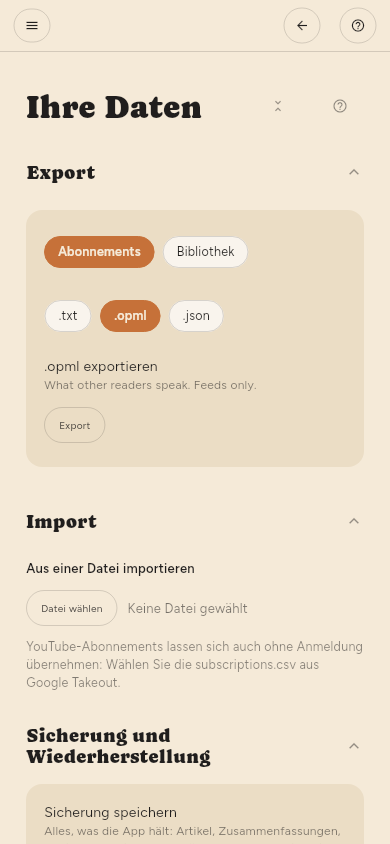

← Referenz der Konfiguration · Inhalt
Wo die Daten liegen
Ihre Bibliothek ist eine einzige SQLite-Datei im Datenverzeichnis der App. Wer diese Datei sichert, sichert alles: Artikel, Zusammenfassungen, Markierungen und was Sie gelesen haben. Konfiguration › Erweitert › Ihre Daten › Sicherung und Wiederherstellung erstellt dieselbe Kopie als eine Datei, ohne dass Sie das Verzeichnis suchen müssen.
